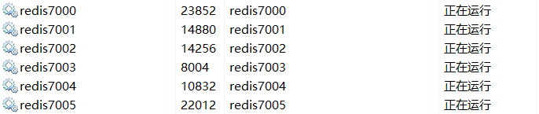

#Golang的Redis简单使用及集群配置
###1.Go-Redis库的安装以及Redis的安装
Go-Redis库的安装
Github地址：https://github.com/go-redis/redis
可以自己go get 或者 git 亦或直接下载放到对应文件夹里即可。
Redis的安装
Github地址：https://github.com/tporadowski/redis/releases
找最新的zip直接下载即可。
###2.简单使用
在代码跑之前需要打开服务端，也就是刚才下载的redis文件夹里面找到redis-server.exe，打开即可。
redis客户端：
1 | client := redis.NewClient(&redis.Options{ |
这里的Addr是默认的6379，如果要改的话(百度吧)，这里的ctx是各种操作需要的第一个参数。
只要Addr一样，就可以直接访问之前存放的数据，与client在哪个go文件使用无关，因此可以存放一些即时数据不需要用到MySQL。
Redis的存放是按照哈希存的，和Map数据结构类似。
Redis-Set
1 | ping, err := client.Ping(ctx).Result()//检测连接 |
Redis-Get
1 | //第二个参数为Key |
Redis-Del
1 | //第二个参数为Key |
一些容器的使用
List：
1 | //List容器 |
其他容器大致和List的操作是一样的，比如Map，Set等等。
它们的对应函数不一样罢了，对应参数顺序大致一样。
Demo
1 | func main(){ |
输出结果：
1 | PONG <nil> |
3.Redis集群配置
因为Redis集群是半数淘汰，因此至少需要3个节点才可以使用。
这里采用三主三从，可以更好的避免节点失误导致集群不可用的情况发生。
6个节点配置文件需要修改的地方
1 | port 你要设置的端口号 #(例如7000) |
Windows启动集群服务
将上述配置文件保存到Redis目录下，并使用这些配置文件安装服务并启动
1 | 安装： |
启动后图片：

下载ruby：
url：https://rubyinstaller.org/downloads/
选择without devkit的最新版本
下载redis驱动：
url:https://rubygems.org/gems/redis/versions
选择兼容版本即可，我用的是3.2.0
安装驱动：
1 | gem install --local gem文件路径\filename.gem |
而现在的cluster安装方式不推荐使用redis-trib.rb，而是使用redis-cli
下载正确的redis-trib.rb:
url:https://pan.baidu.com/s/1hpOu7fGD9pCzpXQ6fFXJzg 提取码：v00z
开始cluster配置：
打开命令行，移动到redis-trib.rb目录之后，输入命令：
1 | redis-trib.rb create --replicas 1 127.0.0.1:7000 127.0.0.1:7001 127.0.0.1:7002 127.0.0.1:7003 127.0.0.1:7004 127.0.0.1:7005 |
会弹出：
1 | Can I set the above configuration? (type 'yes' to accept): |
输入yes回车即可
Mine：
1 | C:\Users\WIN10\Desktop\Redis>redis-trib.rb create --replicas 1 127.0.0.1:7000 127.0.0.1:7001 127.0.0.1:7002 127.0.0.1:7003 127.0.0.1:7004 127.0.0.1:7005 |
验证连接：
1 | 输入： |
集群demo：
1 | C:\Users\WIN10\Desktop\Redis>redis-cli -c -p 7000 |
demo解释
Redis集群中有16384个hash slots，为了计算给定的key应该在哪个hash slot上，我们简单地用这个key的CRC16值来对16384取模。（即：key的CRC16 % 16384）
Redis集群中的每个节点负责一部分hash slots，假设你的集群有3个节点，那么：
Node A contains hash slots from 0 to 5500
Node B contains hash slots from 5501 to 11000
Node C contains hash slots from 11001 to 16383
因此对不同的Key，存储的节点位置是不一样的，但会自动切换到对应的节点位置。